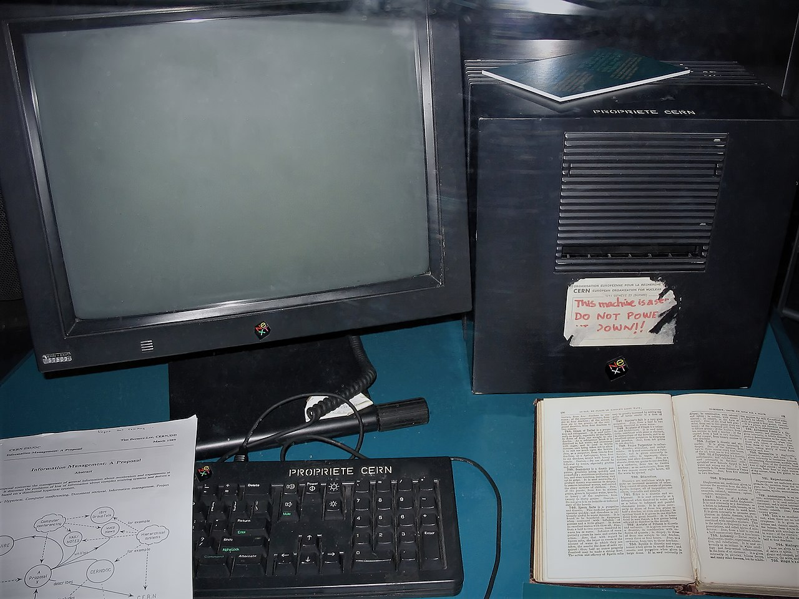

The Single Machine That Held the Web
A Discussion Guide for the NeXTcube Web Server Exhibit

In 1990, the entire World Wide Web existed on a single black magnesium cube sitting on a desk at CERN in Switzerland. This workstation, a NeXTcube developed by Steve Jobs' second company, NeXT, was the birthplace of the technologies that define our modern lives: HTML, HTTP, and the very first web browser. This guide is designed to help students bridge the gap between their daily experience of the "invisible" internet and the physical hardware that started it all.
Pre-Visit: Setting the Stage
Before arriving at the Mimms Museum, use these questions to gauge students' understanding of how the internet works and to prime their curiosity about its physical origins.
- Where is the "Internet"? When you visit a website or use an app, where does that information actually live? Is it in the air, in a cloud, or on a physical object?
- The Danger of a Single Point of Failure: If the entire internet was stored on one computer in your classroom, and someone accidentally unplugged it, what would happen? How would that change how we use information?
- Defining a "Server": We often hear the word "server" in gaming or IT. What do you think a server actually does? Is it different from the laptop or phone you use?
- The Visionary's Choice: Tim Berners-Lee chose the NeXTcube because it was incredibly advanced for its time (featuring high-resolution graphics and built-in networking). Why does the quality of a tool matter when you are trying to invent something completely new?
Post-Visit: Reflecting on the Artifact
After viewing the NeXTcube and its famous "DO NOT POWER IT DOWN" sticker, use these questions to help students process the evolution of computing and the impact of the Web.
- The Physicality of Information: Seeing the actual "cube" that held the first website, did the internet feel more "real" or "tangible" to you? Why do we often forget that the internet requires massive physical infrastructure?
- The Power of a Sticker: The hand-written note on the server is one of the most famous artifacts in tech history. What does that note tell us about the early days of the Web? Was it a massive corporate project, or the work of a few dedicated individuals?
- Centralized vs. Decentralized: The Web started on one machine. Today, it is spread across millions of servers in data centers worldwide. What are the benefits of having information spread out rather than in one place? (Think about security, speed, and reliability).
- Your Own "Cube": Tim Berners-Lee used a high-end workstation to build a tool for everyone. If you had the most powerful computer in the world today, what "invisible" problem would you try to solve for the rest of humanity?
"The Web is more a social creation than a technical one. I designed it for a social effect—to help people work together—and not as a technical toy." — Tim Berners-Lee, Weaving the Web
References & Further Reading
- Berners-Lee, T. (1999). Weaving the Web: The Original Design and Ultimate Destiny of the World Wide Web. HarperSanFrancisco.
- CERN. (n.d.). The Birth of the Web. Retrieved from https://home.cern/science/computing/birth-web
- Science Museum Group. (n.d.). NeXT computer used by Tim Berners-Lee to design the World Wide Web. Online Collection.